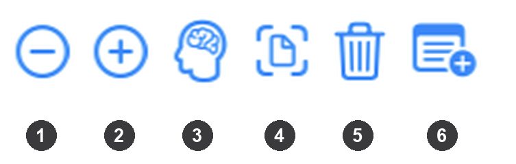
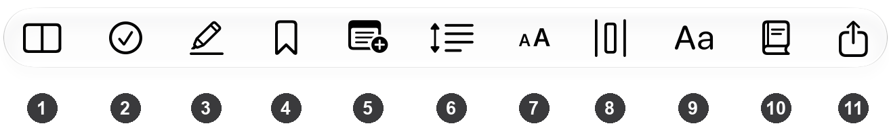

How to Use Write the Word
Write the Word is an iPad app for copying Scripture by hand. You write each verse with the Apple Pencil on ruled lines, keep notes tied to verses, and track your progress and daily habit. Every translation is public domain and stored in the app, so it works fully offline, with no account, no ads and no fees.
You need: an iPad and an Apple Pencil. The Pencil is how you write and how you tap things in the reading area (see Pencil vs. finger).
Contents
- Quick start
- Finding your way around
- Writing a verse
- Writing modes
- The toolbar
- Notes linked to verses
- The Chapter Page
- Highlights and bookmarks
- Convert handwriting to text
- Practice from memory
- Progress and Habit Checker
- Settings, reminders and backup
- Tips and troubleshooting
1. Quick start
- Open the app. It goes straight to the writing area, showing the last chapter you were on.
- Tap the Library button (top left) to choose a book and chapter, then tap a chapter number.
- Tap a verse with the Pencil to select it. A blue box appears around it.
- Write on the ruled lines with the Pencil.
- When you finish the verse, tap the small Next Verse arrow at the end of the line, or just start writing on the next verse.
That's the whole loop. Everything else in this guide is optional.
2. Finding your way around
The Library
Tap the sidebar icon (top-left) to open the Library. It covers the full screen and closes itself as soon as you pick something to go to. It has five tabs:
| Tab | What it does |
|---|---|
| Books | Pick a book, then a chapter. Also has a search field (see below). |
| Notes | Every note you've written. Searchable. |
| Bookmarks | Every verse you've bookmarked. |
| Progress | Overall completion and per-book progress. |
| Habit checker | A calendar of the days you've written. |
Use Close (top-left) to leave the Library, and the gear icon (top-right) for Settings.
Choosing a chapter
In Books, tap a book name to expand it. Inside you'll find:
- a "
Notes" button, which opens a page for notes about the whole book, and - a grid of chapter numbers. Chapters are tinted to show how much you've written.
Search lets you look in two places: Chapters (chapters you've already opened) and My Handwriting (text you've converted from your own handwriting, see section 9).
Moving between chapters
Use the ‹ and › buttons at the top-left of the reader to step to the previous or next chapter without going back to the Library.
3. Writing a verse
Each verse is a row with its own ruled lines. The verse number sits at the top of the row, with a small set of controls beside it while the verse is selected.
Select, then write
- Tap a verse (its text or its writing area) with the Pencil to select it. The selected verse gets a blue outline.
- You can only write on the selected verse. Touching a verse that isn't selected selects it first. Then write.
- Tapping a verse that is already selected clears the selection.
Lines grow as you write
The verse starts with a few lines. As your writing reaches the bottom, another line is added automatically. Empty lines at the bottom are trimmed back for you when you move on. To adjust by hand, use the − and + buttons in the verse's control bar (Fewer Lines / More Lines).
The control bar
While a verse is selected, a row of small buttons appears next to its number:

| # | Button | Action |
|---|---|---|
| 1 | Fewer Lines (circled minus) | Remove a ruled line |
| 2 | More Lines (circled plus) | Add a ruled line |
| 3 | Practice from Memory (a head with a brain) | See Practice from Memory |
| 4 | Convert to Text (a page inside corner brackets) | See Convert to Text |
| 5 | Erase All Ink (trash can) | Erase this verse's ink (asks you to confirm) |
| 6 | Add Note (a note with a plus) | Add a note for this verse |
Two more buttons appear when they apply:
- Check (a circled checkmark) takes the place of Convert to Text (4) while you are practicing from memory, and scores what you wrote.
- Show Text (a plain page of text) appears once a verse has been converted, to show the converted text.
Some buttons only appear when they make sense, for example Practice from Memory only on English reference translations.
Next Verse
The small return arrow at the right end of the writing area finishes this verse and moves the selection to the next one. It only appears on the verse you're writing on.
Erasing
Use the Pencil's own eraser or the tool picker to remove strokes. To wipe a whole verse, use the 🗑 Erase All Ink button; it asks for confirmation because it can't be undone.
Wide handwriting
If you write across the full width in landscape and then rotate to portrait (or switch to Side-by-Side), your writing can be wider than the screen. When that happens, drag sideways with your finger (or use the scroll bar) to slide the whole writing column left and right. The Next Verse arrow stays at the visible right edge as you scroll. When nothing is wider than the screen, the column scrolls up and down only.
Pencil vs. finger
In the reading area:
- Pencil taps select verses, create notes from verse numbers, and press buttons inside the writing area. The Pencil also draws.
- Finger only scrolls. It will never select a verse or leave a mark, so resting your hand or scrolling can't change anything by accident.
(In the Library, Settings and the toolbar, a finger works normally.)
4. Writing modes
Open the Writing Mode menu in the toolbar (the split-rectangle icon) to change how the screen is laid out. The menu appears when a Reference Translation is set (see Settings); with it set to None, only the plain Verse-by-Verse layout is available.
Verse-by-Verse
One continuous column of ruled lines. The reference translation's text for the verse you're writing appears in a floating popup. Drag it out of the way if it covers something. At the end of a chapter, the popup offers a Next Chapter button.
Side-by-Side
The screen splits into two panes: the printed text of the whole chapter and your writing column. Drag the divider to resize the panes. Tap Swap Panels to put the text on the other side.
Top-and-Bottom
The same idea split by height: printed text on top, your writing below, both scrolling independently. Drag the divider to resize. Handy in landscape, where two side-by-side panes get narrow.
Tracing
The reference text appears as faint ghost letters right on your ruled lines, so you can trace over it. Once a verse has ink and you've moved on, the ghost text hides so your finished handwriting is easy to read. In this mode the toolbar offers Tracing Text Size.
5. The toolbar
The buttons across the top of the reader (hover the Pencil or a pointer over a button to see its name):

| # | Button | What it does |
|---|---|---|
| 1 | Writing Mode | Choose Verse-by-Verse, Side-by-Side, Top-and-Bottom or Tracing |
| 2 | Multi-Verse Selection | Turn on to tap several verses into one selection (see below). The check is outlined when off and filled when on |
| 3 | Highlight | Color the selected verse(s). Also Clear Highlight. Appears when something is selected |
| 4 | Bookmark | Bookmark the selected verse(s); the ribbon fills in once the verse is bookmarked. Appears when something is selected |
| 5 | New Note | Create a note attached to the selected verse(s) |
| 6 | Line Spacing | How far apart the ruled lines are |
| 7 | Font Size | Size of the printed reference text (not shown in Tracing) |
| 8 | Word Spacing | Space between the words of the printed reference text (not shown in Tracing) |
| 9 | Font Style | Typeface of the printed reference text (not shown in Tracing) |
| 10 | Chapter Note | Open this chapter's Chapter Page, a space to write about the whole chapter |
| 11 | Export Chapter as PDF | Save or share this chapter, with your handwriting, as a PDF |
Two more buttons appear only in certain modes:
- Swap Panels (two arrows pointing in opposite directions) shows in Side-by-Side mode only, and puts the text pane on the other side.
- Tracing Text Size (a small "A" beside a large "A", like Font Size) shows in Tracing mode only, in place of Line Spacing.
Selecting several verses
Turn on Multi-Verse Selection, then tap each verse you want (they don't have to be next to each other). Tapping a selected verse removes it from the selection. Turning the mode off clears the selection. With several verses selected, Highlight, Bookmark, New Note and Convert to Text all apply to the whole group.
6. Notes linked to verses
A verse note is for one verse (or a group of verses you select). To write about a whole chapter instead, use the Chapter Page. Notes are attached to verses and stay attached even if you change the reference translation.
Creating a note
Any of these creates a note attached to the verse (or the whole selection):
- Tap the verse number with the Pencil.
- Tap Add Note in the verse's control bar.
- Tap New Note in the toolbar.
If a note already exists on that verse, the app opens it instead of creating a duplicate. A small note icon appears at the end of any verse that has notes. Tap it to see and open them.
Inside a note
- Title: at the top.
- Bible References: the verses it's attached to. Tap the reference to jump back to those verses; use the + to add more.
- Related Notes: link other notes together.
- Tags: add your own labels.
- Memo / Prayer / Reflection: a free area to write or draw with the Pencil. You can also add photos, text boxes and markers here.
- A delete button removes the note.
Find notes again from the Library's Notes tab, which has a search field.
7. The Chapter Page
The Chapter Page is a space for writing about the whole chapter. A verse note is for one verse; the Chapter Page is for the chapter as a whole: its main theme, a summary, questions, or what you took from reading it.
Tap Chapter Note in the toolbar to open the current chapter's page.
Draw or write anywhere with the Pencil, and use the buttons on the page to add:
| Button | Adds |
|---|---|
| Photo | A picture from your library |
| Camera | A picture from the camera |
| Add Note Link | A chip you can label and drag anywhere; tap it to jump to its note |
| Add Text Box | A typed text box you can move and resize |
| Add Marker | A sticker |
| Reflection | An optional "what stood out to you" text for this chapter (the icon fills in once you've written one) |
Every book also has its own page: open
8. Highlights and bookmarks
- Select a verse (or several with Multi-Verse Selection).
- Tap Highlight and pick a color, or tap Bookmark.
Each verse keeps its own color, so mixed-color ranges are fine. Choose Clear Highlight to remove a color. See all your bookmarks in the Library's Bookmarks tab, and tap one to jump to it.
9. Convert handwriting to text
The app can read your handwriting and turn it into typed text. This works for English handwriting. (When the reference translation is not English, the buttons are hidden.)
- Select the verse (or several verses).
- Tap Convert to Text in the control bar. A spinner shows while it reads.
- A popup shows what was recognized, with three buttons:
- Replace: show the typed text on that verse instead of the handwriting.
- Check: proofread the text against the reference verse. It shows a percent correct with the words colored (green matched, red struck-through missing, orange out of place). This is only feedback and doesn't save a score.
- Close: dismiss it and change nothing.
Good to know:
- Your original handwriting is never deleted. It stays underneath, and a small pencil button (or the Show Text button) switches between the typed text and the handwriting.
- Recognition can miss a word, especially the first word of a verse if it's messy. If the first attempt finds nothing, the app quietly retries, including once without the first word. In that case the first word may be missing from the result. A few missed words are normal for handwriting; you can fix them in the text.
- Converted text feeds My Handwriting search in the Library.
10. Practice from memory
Test yourself by writing a verse without looking.
- Pick a verse and tap 🧠 Practice from Memory. The reference text is hidden for that verse.
- Write the verse from memory.
- Tap Check. The app reads your handwriting and compares it with the real verse, coloring each word: green recalled correctly, red with a line through it missing, orange written but in the wrong place (often a misremembered word order).
- Your score is saved. The verse number turns green at 100%, or orange below that.
- Below 100% you can Retry (fix your writing and check again) or tap Done. At 100% you choose Save as Text or Save as Handwriting instead.
If the verse already has writing, the app asks before deleting it, because practice starts from a blank verse. Practice needs an English reference translation. Your average score appears under Progress.
11. Progress and Habit Checker
Progress
Open Progress in the Library to see:
- verses written out of the total, and a completion percentage,
- chapters completed,
- how many verses per day would finish the Bible in a year,
- your Current Streak and Longest Streak (consecutive days written),
- your Memory Practice count and average score,
- written-verse counts book by book.
Habit Checker
Habit checker shows a calendar that starts the day you write your first verse. Days you've written are marked, and darker shading means more verses that day (the legend runs from Fewer to More). It also shows how many of the days since you started you've written. Switch the Day / Week / Month picker to change the bar chart of how many verses you wrote in each period, including the quiet ones.
12. Settings, reminders and backup
Open Library → gear icon.
Reading
- Theme: System, Light, Dark, Sepia or Custom (pick your own background color).
- Reference Translation: the translation shown beside what you write. Choose None to hide it entirely.
Available translations, all public domain and built into the app:
| Code | Translation |
|---|---|
| KJV | King James Version |
| ASV | American Standard Version |
| WEB | World English Bible |
| YLT | Young's Literal Translation |
| KRV | Korean Revised Version |
The KRV works as a reference to copy, but Convert to Text and Practice from Memory are English-only.
Reminders
- Daily Reminder: a notification at the time you choose, nudging you to write.
- Alert If Not Written (Habit Checker): notifies you only if you haven't written anything yet that day by the time you set.
If you don't see the permission prompt, notifications may be turned off for the app in the iPad's own Settings.
Data and backup
- iCloud sync: what you write and create syncs across your iPads through your own private iCloud account, with no setup beyond being signed in to iCloud. It is not a backup: a deletion syncs to your other iPads too, so use Back Up below as well.
- Save Notes: exports every note as one Markdown document you can name and save or share.
- Back Up: saves everything (notes, your handwritten verses, chapter and book pages, images, text boxes, highlights and bookmarks) into a single file. Save it to Files or iCloud Drive, not just the share sheet, so it survives even if the app is deleted.
- Restore: brings a backup back on this or another iPad. It replaces everything currently in the app and can't be undone.
- Erase All: permanently deletes all your data. It asks for confirmation.
13. Tips and troubleshooting
Nothing happens when I tap a verse. Use the Apple Pencil. A finger only scrolls in the reading area.
I can't write on a verse. Select it first with a Pencil tap. Only the selected verse accepts ink.
My handwriting runs off the screen. Slide the writing column sideways with a finger, or use the horizontal scroll bar. See Wide handwriting.
The floating text is in my way. In Verse-by-Verse mode, drag the popup. Or switch to Side-by-Side or Top-and-Bottom so the text has its own pane.
Converted text is wrong or missing words. Handwriting recognition isn't perfect. Write a little larger and more neatly, and keep words clearly separated. Retry, or correct the text by hand. Your handwriting itself is always kept.
I only want to write, no reference text. Set Reference Translation to None in Settings.
Back up before big changes. Use Back Up in Settings before Restore or Erase All. Both are permanent.
Write the Word is free, has no ads, and works fully offline. iCloud sync is optional.